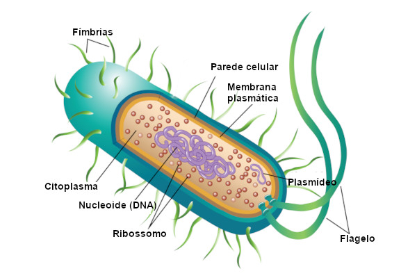
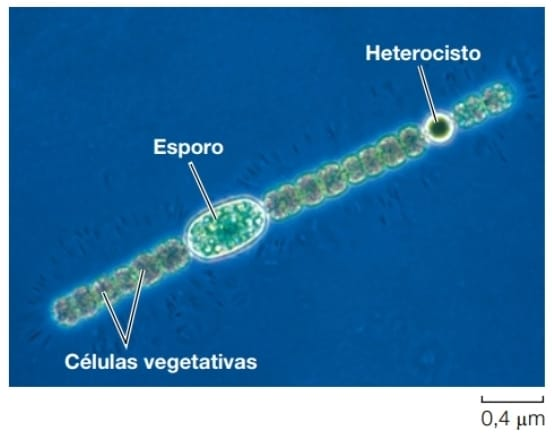

Bactérias
As bactérias são seres procariontes e seu material genético está concentrado em uma região que não é
envolta por membrana. Essa região é denominada nucleoide. Além do material genético presente no
nucleoide, nas bactérias podem ser observadas moléculas circulares de DNA pequenas — chamadas de
plasmídeos —, as quais se replicam independentemente.
As células bacterianas são dotadas de parede celular, uma estrutura localizada externamente à membrana
plasmática. A função da parede celular é garantir a manutenção do formato da célula e protegê-la.
A estrutura celular das bactérias é composta por diversas partes essenciais para seu funcionamento. O
material genético está concentrado no nucleoide, uma região sem membrana, enquanto os plasmídeos,
pequenas moléculas de DNA circular, podem se replicar de forma independente e frequentemente carregam
genes de resistência a antibióticos. Os ribossomos, menores que os das células eucariontes, estão
presentes no citoplasma e são responsáveis pela síntese de proteínas. A parede celular, uma estrutura
rígida ao redor da membrana plasmática, oferece proteção e mantém a forma da célula. Além disso,
flagelos e fímbrias são estruturas que auxiliam na locomoção e na adesão a superfícies.
Para a maioria das bactérias, o efeito da coloração de Gram é determinado pela estrutura quimica da
parede celular.
A forma é outra característica fenotípica de utilidade para identificação básica de bactérias. As três
formas mais comuns são: esfera, bastão e hélice
A reprodução bacteriana pode ocorrer de diversas formas. O método mais comum é a divisão binária, um
processo assexuado em que a célula-mãe se divide em duas células-filhas idênticas. Além disso, algumas
bactérias podem realizar a conjugação, um mecanismo de troca de material genético entre duas células por
meio de uma ponte de conjugação, promovendo variabilidade genética. Quanto ao metabolismo, existem
bactérias autotróficas, capazes de produzir seu próprio alimento por fotossíntese ou quimiossíntese, e
heterotróficas, que obtêm nutrientes a partir da matéria orgânica, seja viva ou decomposta.

Classificação dos grupos das bactérias
- Hadobactérias: Conhecidas por sua capacidade de sobreviver em condições extremas, como altas temperaturas e radiação. Exemplos incluem Deinococcus, resistente à radiação e capaz de degradar resíduos tóxicos, e Thermus aquaticus, que fornece a enzima DNA-polimerase utilizada na reação em cadeia da polimerase (PCR).
- Bactérias Hipertermofílicas: Estas bactérias prosperam em ambientes de alta temperatura, como fontes termais e respiradouros vulcânicos. Gêneros como Aquifex e Thermotoga são exemplos que utilizam hidrogênio, oxigênio e sais minerais para viver em temperaturas próximas ao ponto de ebulição da água.
- Firmicutes: Este grupo inclui bactérias gram-positivas com baixa razão GC (guanina-citosina) no DNA. Apesar de algumas não terem parede celular e algumas serem gram-negativas, análises genéticas confirmam sua monofilia. São conhecidas por sua diversidade e importância médica, incluindo patógenos e produtores de antibióticos.
- Actinobactérias: Também gram-positivas, mas com uma alta razão GC no DNA. Apresentam crescimento filamentoso, semelhantes aos fungos, e incluem bactérias de importância médica como Mycobacterium tuberculosis, causador da tuberculose, e Streptomyces, fonte de muitos antibióticos.
- Espiroquetas: Estas bactérias gram-negativas possuem um filamento axial que lhes permite se mover em um movimento tipo saca-rolhas. Muitas são parasitas de humanos, como os causadores de sífilis e doença de Lyme.
- Clamídias: São bactérias parasitas obrigatórias, vivendo dentro das células de outros organismos. Embora a crença antiga fosse de que elas não produzem ATP, estudos recentes mostraram que podem captar ATP do citoplasma do hospedeiro.
- Proteobactérias: O maior grupo bacteriano em termos de espécies descritas. Incluem uma grande variedade de formas e funções, desde fotoautotróficas até patógenos humanos conhecidos como Escherichia coli, Yersinia pestis, e Vibrio cholerae. Acredita-se que as mitocôndrias dos eucariotos derivaram de uma proteobactéria por endossimbiose.
- Cianobactérias:
- As cianobactérias são bactérias fotossintéticas, muitas vezes chamadas de algas verde-azuladas devido à sua pigmentação. Elas utilizam clorofila a para realizar a fotossíntese, liberando oxigênio e fixando nitrogênio, o que foi crucial para a transformação da atmosfera da Terra primitiva. Esses organismos possuem sistemas de membranas internas altamente organizados, chamados lamelas fotossintéticas, e são ancestrais dos cloroplastos encontrados em plantas e algas eucarióticas.
- As cianobactérias podem existir como células isoladas ou formar colônias multicelulares que variam de lâminas planas a formas filamentares e esféricas. Algumas colônias diferenciam-se em três tipos de células: vegetativas (realizam fotossíntese), esporos (resistem a condições adversas e se desenvolvem em novos filamentos) e heterocistos (especializadas na fixação do nitrogênio e na reprodução). A capacidade das cianobactérias de formar essas estruturas especializadas lhes permite prosperar em uma ampla gama de ambientes e desempenha um papel crucial nos ciclos biogeoquímicos da Terra.
Cianobactérias
As cianobactérias, organismos fotossintéticos de grande importância ecológica, têm um potencial
biotecnológico imenso. Além de seu papel fundamental na fixação de nitrogênio e na produção de oxigênio,
essas bactérias vêm sendo exploradas em diversas áreas.
Na agricultura, as cianobactérias atuam como biofertilizantes naturais, reduzindo a dependência de
fertilizantes químicos e promovendo práticas agrícolas mais sustentáveis. Sua capacidade de fixar
nitrogênio atmosférico enriquece o solo, aumentando a produtividade das culturas. Além disso, são ricas
em nutrientes, tornando-as promissoras para a indústria de alimentos e suplementos nutricionais. A
Spirulina, um gênero de cianobactéria, é um exemplo clássico, sendo amplamente utilizada por seu alto
teor proteico e vitaminas.
No setor energético, as cianobactérias se destacam como uma fonte potencial de biocombustíveis. Sua
capacidade de converter a energia solar em biomassa abre caminho para a produção de bioetanol e
biodiesel de forma sustentável, reduzindo a dependência de combustíveis fósseis.
A biotecnologia também encontra nas cianobactérias uma aliada valiosa. Essas bactérias podem ser
geneticamente modificadas para produzir uma variedade de compostos de interesse industrial, como
bioplásticos biodegradáveis, pigmentos naturais com propriedades antioxidantes e anti-inflamatórias, e
enzimas para diversas aplicações. Além disso, sua capacidade de tolerar condições extremas as torna
candidatas ideais para processos de biorremediação, limpando ambientes contaminados por poluentes.
Apesar de seus benefícios, as cianobactérias também apresentam desafios. A floração de algas, um
fenômeno causado pela proliferação excessiva dessas bactérias, pode levar à produção de toxinas que
contaminam a água e prejudicam a vida aquática. Além disso, o cultivo em larga escala de cianobactérias
exige o desenvolvimento de tecnologias eficientes e a criação de normas regulamentadoras para garantir a
segurança e a sustentabilidade.
As perspectivas futuras para as cianobactérias são promissoras. Com o avanço da biologia sintética, é
possível imaginar a criação de organismos geneticamente modificados com características ainda mais
interessantes para aplicações específicas. As cianobactérias também podem desempenhar um papel crucial
em missões espaciais, fornecendo oxigênio, alimentos e combustíveis para futuras colônias humanas.

Curiosidades
- As cianobactérias, também chamadas de algas azuis, são organismos que possuem uma história evolutiva longa e características únicas. Elas foram os primeiros organismos a realizar fotossíntese oxigênica,liberando oxigênio como subproduto. Cerca de 2,4 bilhões de anos atrás, elas liberaram quantidades significativas de oxigênio na atmosfera, alterando completamente sua composição. Esse evento, conhecido como a Grande Oxigenação, foi crucial para a evolução da vida como a conhecemos. Curiosamente, as cianobactérias, juntamente com outros organismos fotossintetizantes marinhos, são a maior fonte de oxigênio do planeta. Embora muitos acreditem que as florestas terrestres sejam responsáveis pela maior parte do oxigênio, é nos oceanos que ocorre a maior produção, sendo as cianobactérias fundamentais nesse processo.
- Outro aspecto fascinante das cianobactérias é o fato de que os cloroplastos das plantas e algas eucarióticas são resultado de uma antiga simbiose entre uma célula eucariótica e uma cianobactéria, um processo chamado endossimbiose. Há uma analogia interessante que compara as cianobactérias para os cloroplastos das plantas ao que as mitocôndrias são para as células eucarióticas nos seres humanos. Ambas as organelas têm origem endossimbiótica e desempenham papéis fundamentais no metabolismo energético dos organismos.
- Além disso, as cianobactérias são conhecidas por viverem em ambientes extremófilos, como desertos, fontes termais, lagos salinos e até nas geleiras da Antártica. Sua capacidade de adaptação permite que sobrevivam em condições bastante adversas. Elas também têm a capacidade de fixar nitrogênio atmosférico, o que as torna importantes para a fertilidade do solo e da água, contribuindo para ecossistemas aquáticos e terrestres, especialmente em ambientes pobres em nutrientes.
- Entretanto, as cianobactérias podem causar problemas, como a formação de grandes florações em corpos d'água quando há excesso de nutrientes, como fósforo e nitrogênio. Essas florações podem liberar toxinas que são prejudiciais a outros organismos, incluindo seres humanos e animais. Além disso, elas produzem um forte odor e gosto desagradável nas águas, o que pode levar a um desequilíbrio nos ecossistemas, pois a água deixa de ser consumida por alguns animais. Esses organismos também podem se organizar em colônias multicelulares, formando filamentos ou aglomerados, o que facilita a cooperação entre as células.
- As cianobactérias também desempenham um papel crucial na formação de estromatólitos, estruturas rochosas fossilizadas que representam alguns dos registros mais antigos de vida na Terra, e que ainda podem ser encontrados em locais como a Austrália e as Bahamas. Além disso, elas têm aplicações importantes em áreas como aquacultura e agricultura. Devido à sua capacidade de fixar nitrogênio, elas são usadas como biofertilizantes e também são cultivadas para melhorar a qualidade da água e fornecer nutrientes para organismos aquáticos. Mesmo após bilhões de anos, as cianobactérias continuam a desempenhar um papel vital no equilíbrio ecológico do planeta.